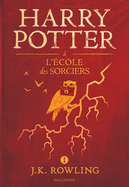

Mon élément
Luca Biancaniello
2M05
Kakouuu ! Voici ma première page web :)
5 séries préférées :
- Friends
- The gilmore girls
- La casa de papel
- Stranger Things
- Gossip girl
| Taylor Swift | Olivia Rodrigo | SZA | Tate McRae |
| Wildest dreams | Drivers license | SOS | Dear God |
| So long, London | Logical | F2F | Calgary |
Tate McRae : Revolving Door
3 livres :
Harry Potter tome 1
